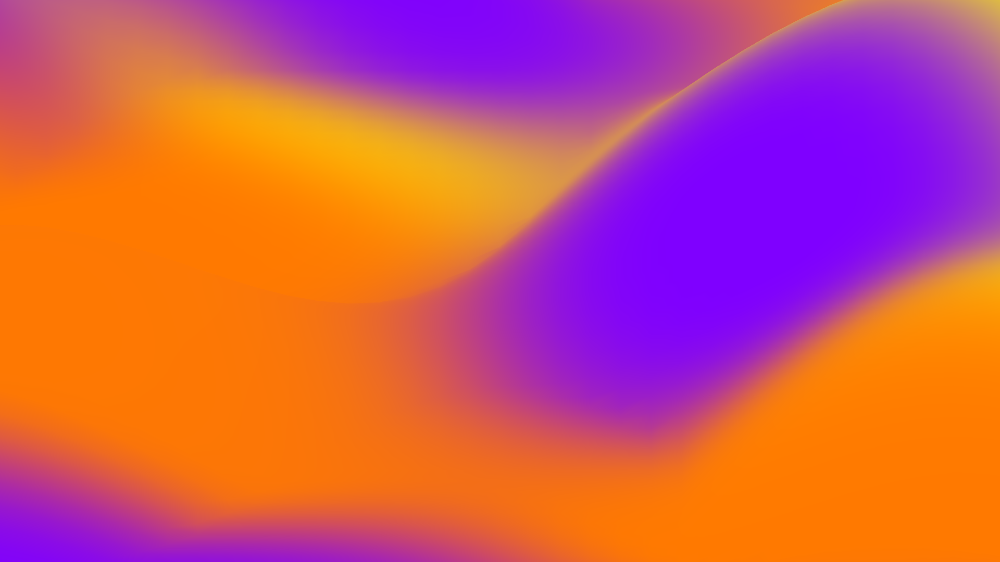
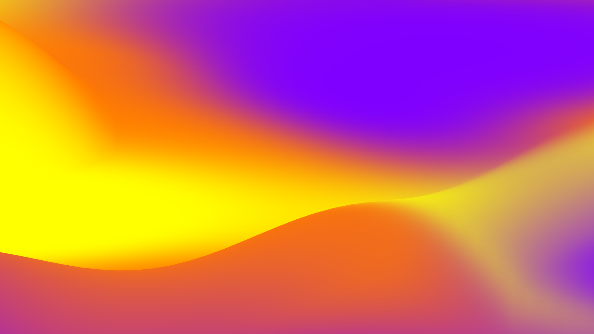
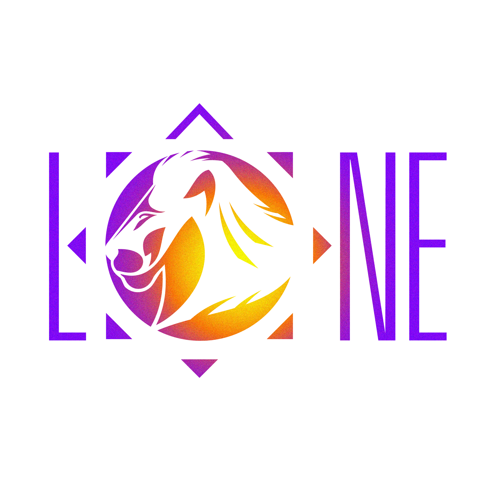

LÔNE INTUITIVE
Tarologue • Cartomancienne • Coach en développement personnel
↓
Le meilleur moyen de prédire
l'avenir, c'est de le créer.
l'avenir, c'est de le créer.
Qui suis-je ?

Je prône le développement personnel et l'équilibre entre le travail et la vie personnelle. Le tarot est un formidable outil pour accéder à son propre développement personnel !
Je m'appelle Sandie, je suis la créatrice de Lône Intuitive. Formée en tarologie, symbologie, numérologie, et ancienne cadre responsable en développement j'organise différents types d'ateliers autour du Tarot et du développement personnel afin d'accompagner au mieux, les clients sur leur chemin de vie. Je propose aussi des tirages privés.



Tirages privés
- 1h --> 60€
- 30min --> 30€
- Réponse à une question 10min --> 10€
- Tirage par mail (sous 48h) --> 40€ envoyé sous forme de livret imprimable
Ateliers tarot
- Atelier développement personnel autour du tarot
- 10 personnes max
- Environ 1h30
- 15€ par personnes
Show
- Café tarot
- Événementiel
- Événements bien-être
- Comité d'entreprise
- Magasin
- Foires et salons
- Restaurant
Sur devis
Contact :
Téléphone : 0632168759
Mail : lone28contact@gmail.com

Site web codé par Louann Hergott.